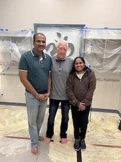
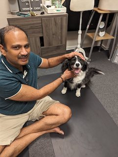

<!DOCTYPE html>
<html>
<head><meta name="generator" content="Hexo 3.8.0">
  <meta charset="utf-8">
  
  <title>Earthing/Grounding | Maitree Healer</title>
  <meta name="viewport" content="width=device-width, initial-scale=1, maximum-scale=1">
  <meta name="description" content="Shop Now  With Client Ober   Pet Healing on Grounding Mat  Is it for you Who wants to have a better quality of life?Was active for a long time but something changed drastically recently affecting qual">
<meta property="og:type" content="website">
<meta property="og:title" content="Earthing&#x2F;Grounding">
<meta property="og:url" content="https://maitreehealer.com/earthing/index.html">
<meta property="og:site_name" content="Maitree Healer">
<meta property="og:description" content="Shop Now  With Client Ober   Pet Healing on Grounding Mat  Is it for you Who wants to have a better quality of life?Was active for a long time but something changed drastically recently affecting qual">
<meta property="og:locale" content="en">
<meta property="og:image" content="https://maitreehealer.com/images/withclintober.jpg">
<meta property="og:image" content="https://maitreehealer.com/images/pethealing.jpg">
<meta property="og:updated_time" content="2025-08-05T04:25:16.454Z">
<meta name="twitter:card" content="summary">
<meta name="twitter:title" content="Earthing&#x2F;Grounding">
<meta name="twitter:description" content="Shop Now  With Client Ober   Pet Healing on Grounding Mat  Is it for you Who wants to have a better quality of life?Was active for a long time but something changed drastically recently affecting qual">
<meta name="twitter:image" content="https://maitreehealer.com/images/withclintober.jpg">
  
  
    <link rel="icon" href="/favicon.png">
  
  
    <link href="//fonts.googleapis.com/css?family=Source+Code+Pro" rel="stylesheet" type="text/css">
  
  <link rel="stylesheet" href="/css/style.css">
  
<!-- Google Analytics -->
<script type="text/javascript">
(function(i,s,o,g,r,a,m){i['GoogleAnalyticsObject']=r;i[r]=i[r]||function(){
(i[r].q=i[r].q||[]).push(arguments)},i[r].l=1*new Date();a=s.createElement(o),
m=s.getElementsByTagName(o)[0];a.async=1;a.src=g;m.parentNode.insertBefore(a,m)
})(window,document,'script','//www.google-analytics.com/analytics.js','ga');

ga('create', 'G-718X5S728T', 'auto');
ga('send', 'pageview');

</script>
<!-- End Google Analytics -->


</head>
</html>
<body>
  <div id="container">
    <div id="wrap">
	
      <header id="header">
  <div id="banner"></div>
  <div id="header-outer" class="outer">
    <div id="header-title" class="inner">
      <h1 id="logo-wrap">
        <a href="/" id="logo">Maitree Healer

        </a>
      </h1>
      <br>
      <h1 style="font-size: 2rem;color: #FF0000">
        <marquee behavior="scroll" direction="left"> Offering holistic support for emotional wellness.</marquee>
      </h1>
      
    </div>
    <div id="header-inner" class="inner">
      <nav id="main-nav">
        <a id="main-nav-toggle" class="nav-icon"></a>
        
          <a class="main-nav-link" href="/">Home</a>
        
          <a class="main-nav-link" href="/about/">About</a>
        
          <a class="main-nav-link" href="/emotional_wellness">Emotional Wellness</a>
        
          <a class="main-nav-link" href="/testimonial">Testimonial</a>
        
          <a class="main-nav-link" href="/donate">Donate</a>
        
          <a class="main-nav-link" href="/gift">Gift</a>
        
          <a class="main-nav-link" href="/earthing">Earthing</a>
        
          <a class="main-nav-link" href="/contact">Contact</a>
        
      </nav>
      <nav id="sub-nav">
        
         <!-- commented for google search <a id="nav-search-btn" class="nav-icon" title="Search"></a> -->
      </nav>
      <!--<div id="search-form-wrap">
        <form action="//google.com/search" method="get" accept-charset="UTF-8" class="search-form"><input type="search" name="q" class="search-form-input" placeholder="Search"><button type="submit" class="search-form-submit">&#xF002;</button><input type="hidden" name="sitesearch" value="https://maitreehealer.com"></form>
      </div> -->
    </div>
  </div>
</header>

      <div class="outer">
        <section id="main"><article id="page-" class="article article-type-page" itemscope itemprop="blogPost">
  <!--<div class="article-meta">
    <a href="/earthing/index.html" class="article-date">
  <time datetime="2025-08-05T04:25:16.454Z" itemprop="datePublished">2025-08-04</time>
</a>
    
  </div> -->
  <div class="article-inner">
    
    
      <header class="article-header">
        
  
    <h1 class="article-title" itemprop="name">
      Earthing/Grounding
    </h1>
  

      </header>
    
    <div class="article-entry" itemprop="articleBody">
      
        <p><a href="https://www.earthing.com/?rfsn=7831951.40d4d6&amp;utm_source=refersion&amp;utm_medium=affiliate&amp;utm_campaign=7831951.40d4d6" target="_blank" rel="noopener">Shop Now</a></p>
<p><strong> With Client Ober </strong><br></p>
<p><strong> Pet Healing on Grounding Mat </strong><br></p>
<p><strong>Is it for you</strong></p>
<p>Who wants to have a better quality of life?<br>Was active for a long time but something changed drastically recently affecting quality of life.<br>Who want to be pain free?</p>
<p><strong>My interpretation</strong><br>I know Grounding is an important technique in Pranic Healing.<br>Recently I heard about Earthing/Grounding. After reviewing and experiencing I am sharing this information.<br>In Tamil language, there is a saying people who trust land/mother earth will never be betrayed.<br>Now I can understand it is not only for food produce but also for Healthy Living.</p>
<p>As per Ayurveda <strong>EARTH</strong> is one of the five elements. We are in touch with other 4 elements (space, fire, water and air) but <strong>lost DIRECT connection</strong> with the mother earth.</p>
<p><strong>General observation:</strong></p>
<p>1) We might have observed people who work on the fields(agriculture) with bare foot on the ground. Stays healthy than the people in the modern city life style.<br>2) When a child cries out of fear, child will be in an unbalanced state when a Mom hugs and carry them, child will become balanced and will be happy. if the child couldn’t reach Mom, the pain and sufferings will aggravate and create trauma.  (The inflammation is stored in cellular memory)<br>3) Back in Asia - Indian culture. We are connected to mother earth<br><blockquote><p>a) Entering the temple in barefoot<br>b) Walking barefoot to the temple over multiple days in land/hill.<br>c) Eating food on ground instead from plate.<br>d) Standing or Playing barefoot in the beach.</p>
</blockquote></p>
<p>4) Natural Therapy - Mud Therapy<br>The list goes on….</p>
<p><strong>Clint Ober</strong> has found this disconnect and worked hard to make common man life easier.</p>
<p><strong><em>What it helps???</em></strong> Sleep disorder, Jet Lag, Inflammation related problems across the body, anxiety, pregnancy….. and for the spiritual growth.</p>
<p><strong>Two Solutions</strong><br><strong>1) Outdoor/Weather/Physical movement permits</strong> - Spend 30 minutes direct connect with mother earth without any insulation</p>
<p><strong>2) Indoor - Use the earthing tools</strong><br>     a) Mat - Under the work table/place to keep leg grounded or on top of the bed<br>     b) Pillow cover/ Bedsheet - Helps for people who cannot move.<br>     c) Patch - Directly on the Marma/Acu Point or on the affected area.</p>
<p>I have used personally for working in computers, sleep, and for my family/friends there is a drastic change in  quality of life.</p>
<p>if you are interested to learn further and experience it.<br><blockquote><p><strong>All the best in your journey with Mother Nature</strong></p>
</blockquote></p>
<p>Watch the award winning documentary.</p>
<iframe width="560" height="315" src="https://www.youtube.com/embed/44ddtR0XDVU?si=CEqvhZMdC0qCEFZh" title="YouTube video player" frameborder="0" allow="accelerometer; autoplay; clipboard-write; encrypted-media; gyroscope; picture-in-picture; web-share" allowfullscreen></iframe>

<p>Once you are ready to experiment Indoor, buy using below partner link</p>
<p><a href="https://www.earthing.com/?rfsn=7831951.40d4d6&amp;utm_source=refersion&amp;utm_medium=affiliate&amp;utm_campaign=7831951.40d4d6" target="_blank" rel="noopener">Shop Now</a></p>
<p><a href="https://bit.ly/481fN7L" target="_blank" rel="noopener">https://bit.ly/481fN7L</a></p>
<p><script type="text/javascript" src="//cdn.refersion.com/creative.js"></script></p>
<p><script>$rfsn_creative.generate(‘refersion_client/49032/creatives/dynamic/104394-a680412d722c4212a231c493aea4e969.json’, {<br>    aid: ‘7831951.40d4d6’<br>});</script><div id="rfsn_img_104394"></div></p>

      
    </div>
    <footer class="article-footer">
      <a data-url="https://maitreehealer.com/earthing/index.html" data-id="cmdy1i7k70004xbb1oc48c0dg" class="article-share-link">Share</a>
      
      
    </footer>
  </div>
  
    
  
</article>


</section>
        
          <aside id="sidebar">
  
    

  
    

  
    
  
</aside>
        
      </div>
      <footer id="footer">
  
  <div class="outer">
    <div id="footer-info" class="inner">
	 <p>Disclosure Statement: The material presented on this website is intended for informational and educational purposes only, and in no way is meant to substitute for individualized health care or treatment, or mental or behavioral health care therapy provided in person by a qualified professional. Marma Therapy is an ancient form of energy healing and is not intended as a substitute for medical or mental or behavioral health care.  No claim to diagnose, treat or cure any disease, ailment or otherwise provide mental, physical, or behavioral health care is guaranteed, promised or implied by Vinothkumar Dharmalingam by this website.  The information and testimonials contained in this website do not constitute a guarantee, commitment, promise or warranty of any result, outcome, or healing of any individual receiving healing.  By reading and/or browsing through this website, you have agreed to this disclaimer.</p>      &copy; 2019 - 2025 Vinothkumar Dharmalingam<br>
      Powered by <a href="http://hexo.io/" target="_blank">Hexo</a>
    </div>
  </div>
</footer>

    </div>
    <nav id="mobile-nav">
  
    <a href="/" class="mobile-nav-link">Home</a>
  
    <a href="/about/" class="mobile-nav-link">About</a>
  
    <a href="/emotional_wellness" class="mobile-nav-link">Emotional Wellness</a>
  
    <a href="/testimonial" class="mobile-nav-link">Testimonial</a>
  
    <a href="/donate" class="mobile-nav-link">Donate</a>
  
    <a href="/gift" class="mobile-nav-link">Gift</a>
  
    <a href="/earthing" class="mobile-nav-link">Earthing</a>
  
    <a href="/contact" class="mobile-nav-link">Contact</a>
  
</nav>
			

<script src="//ajax.googleapis.com/ajax/libs/jquery/2.0.3/jquery.min.js"></script>


  <link rel="stylesheet" href="/fancybox/jquery.fancybox.css">
  <script src="/fancybox/jquery.fancybox.pack.js"></script>


<script src="/js/script.js"></script>

			
    
  </div>
  
			  
</body>
</html>